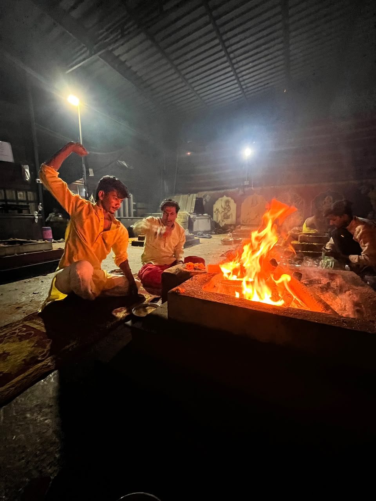
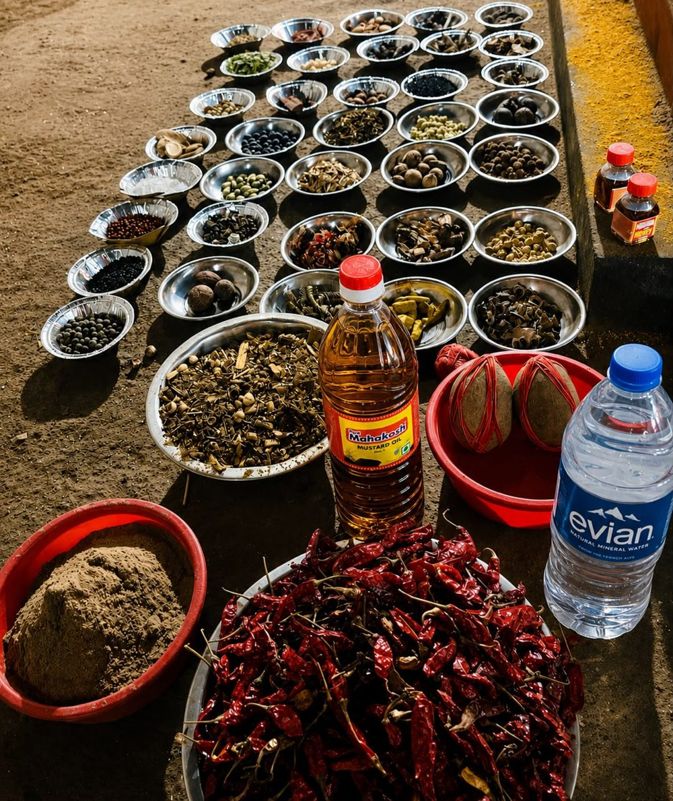
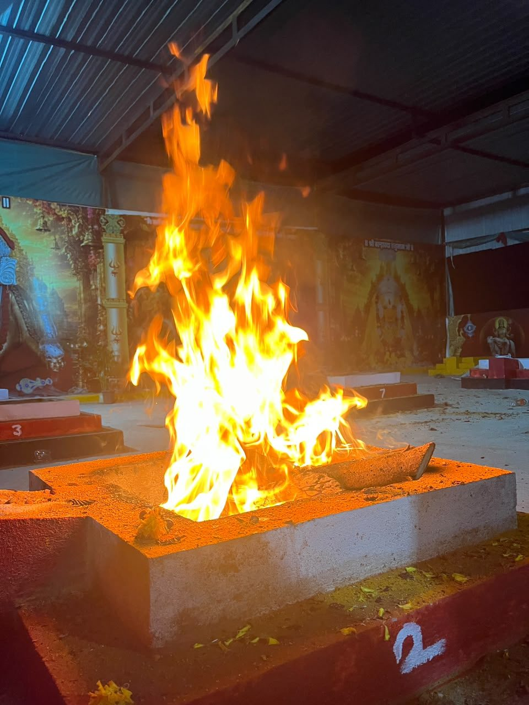
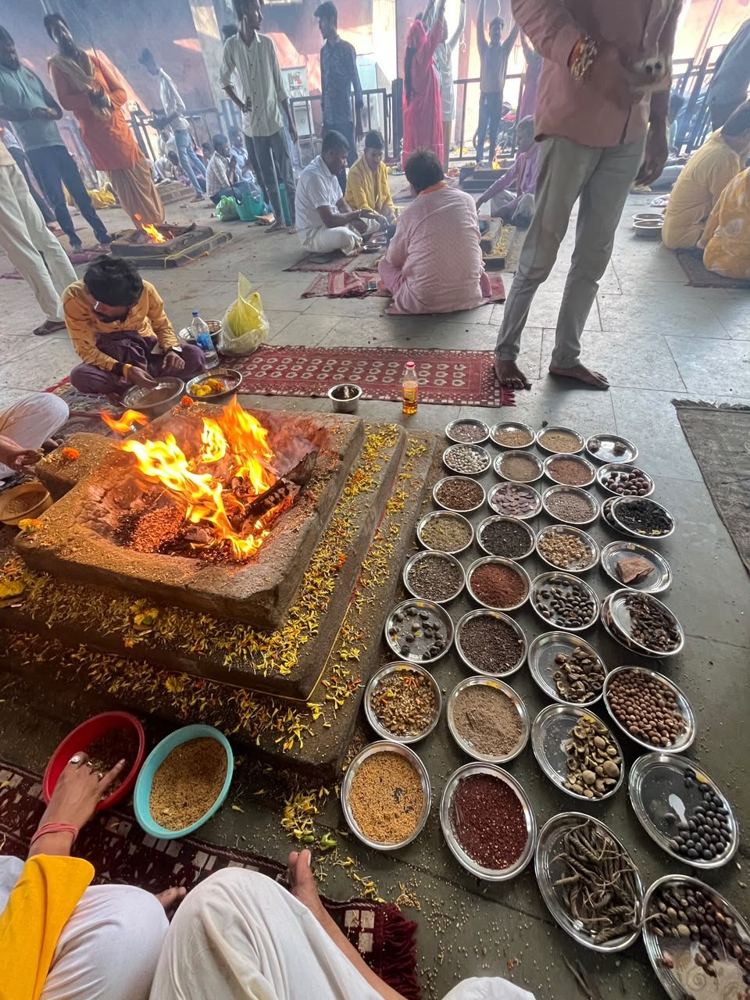
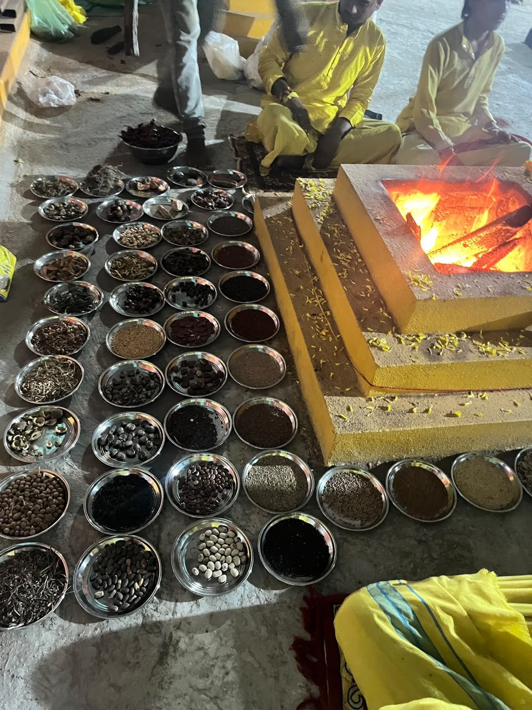
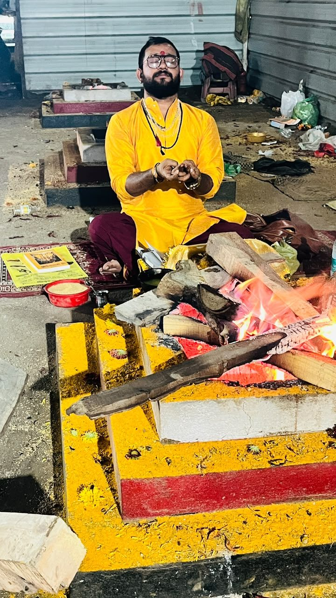

.jpeg) 12 / 15
12 / 15शत्रु बाधा हवन
विरोधी बाधाओं से सुरक्षा, साहस और आत्मबल के लिए।
दक्षिणा आरंभ₹2,500
• शास्त्र • साधना • सेवा
शुद्ध संकल्प और शास्त्रोक्त विधि से वैदिक एवं तांत्रिक हवन–अनुष्ठान
Maa Baglamukhi Hawan in Nalkheda by Acharya Shubham Pandey

आचार्य परिचय
आचार्य पं. शुभम् पांडेय पिछले 5 वर्षों से वैदिक एवं तांत्रिक परंपरा के अनुसार विभिन्न प्रकार के हवन, जप एवं अनुष्ठान शास्त्रोक्त विधि-विधान से संपन्न करा रहे हैं।
इनका प्रशिक्षण एवं आध्यात्मिक मार्गदर्शन माँ बगलामुखी शक्तिपीठ, नलखेड़ा आगर मालवा (म.प्र.) में अनुभवी एवं विद्वान ब्राह्मणों के सान्निध्य में प्राप्त हुआ है। गुरु-परंपरा के अनुसार इन्होंने वैदिक एवं तांत्रिक कर्मकाण्ड, मंत्र साधना तथा यज्ञ-विधान का अध्ययन एवं अभ्यास किया है।
प्रत्येक अनुष्ठान यजमान की आवश्यकता एवं संकल्प के अनुसार पूर्ण श्रद्धा, गोपनीयता और विधि-विधान के साथ संपन्न कराया जाता है। उद्देश्य केवल हवन कराना नहीं, बल्कि श्रद्धालुओं को उचित आध्यात्मिक मार्गदर्शन देना है।
॥ जय माँ बगलामुखी ॥

.jpeg)

हर अनुष्ठान यजमान के संकल्प के अनुसार, पूर्ण श्रद्धा और गोपनीयता के साथ।
हवन एवं अनुष्ठान
12 / 15विरोधी बाधाओं से सुरक्षा, साहस और आत्मबल के लिए।
 11 / 15
11 / 15न्यायिक मामलों में सफलता और मानसिक शांति की प्रार्थना।
 07 / 15
07 / 15अत्यंत कठिन, तांत्रिक और शत्रु बाधाओं से रक्षा हेतु विशेष हवन।
 09 / 15
09 / 15धन, व्यापार, समृद्धि और आर्थिक राहत की कामना के लिए।
 15 / 15
15 / 15विवाह की बाधा, शुभ योग और पारिवारिक सहमति की कामना के लिए।
.jpeg) 01 / 15
01 / 15व्यक्तित्व, सहयोग, अवसर और सामाजिक प्रतिष्ठा के लिए।
अंतिम दक्षिणा परामर्श के समय पुष्टि की जाती है।

अनुष्ठान की झलक



सरल प्रक्रिया
.jpeg)
आवश्यक सूचना: वर्णित लाभ धार्मिक एवं तांत्रिक परंपराओं पर आधारित हैं। परिणाम व्यक्ति की श्रद्धा, संकल्प, विधि-विधान तथा गुरु के मार्गदर्शन पर निर्भर माने जाते हैं। यह सेवा चिकित्सा, कानूनी या वित्तीय सलाह का विकल्प नहीं है।

॥ शास्त्र • साधना • सेवा ॥
माँ बगलामुखी शक्तिपीठ, नलखेड़ा आगर मालवा (म.प्र.) में प्रत्यक्ष अनुष्ठान के साथ भारत या विदेश में रहने वाले श्रद्धालु वीडियो कॉल द्वारा भी जुड़ सकते हैं। व्यवस्था एवं परामर्श के लिए WhatsApp पर संपर्क करें।